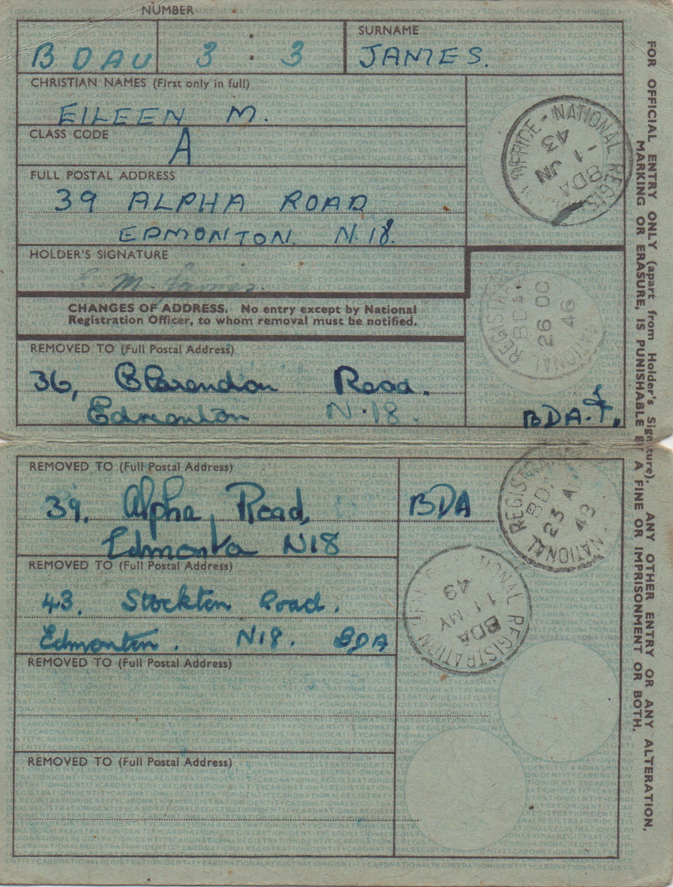
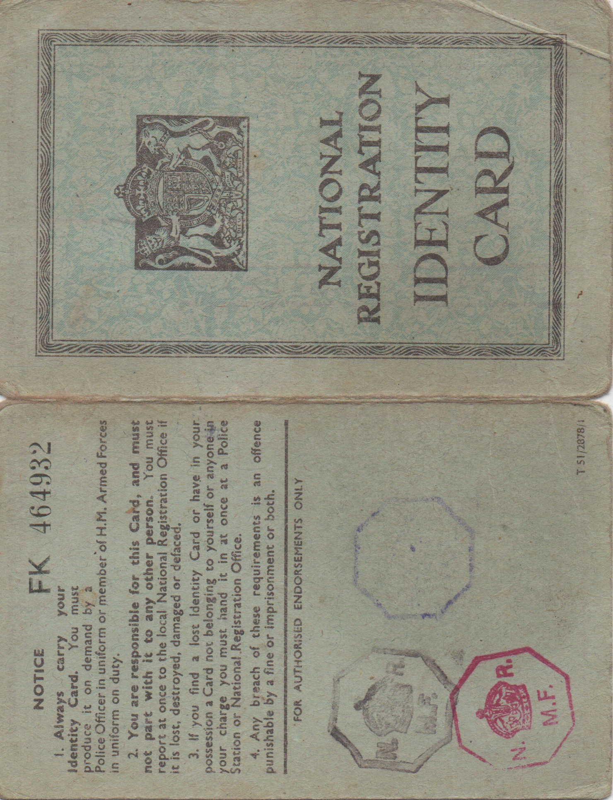

Born 30th April 1921 in Edmonton, North London.
Born 30th April 1921 in Edmonton, North London.
Married to Jim on Saturday 6th February 1943 at St James's Church in Fore Street, Edmonton
 Here we see Eileen at the age of, probably, three or four, with her mother, May.
Here we see Eileen at the age of, probably, three or four, with her mother, May.
The photo on the left was taken in 1932, when Eileen took part in a school play. We guess she was a fairy.

The middle photo is of Alice and Jim Wilkinson, Eileen's grandparents, May's parents.


The photo on the left is, we believe, a year after her marriage to Jim, obviously taken at a photographic studio. Then we have another photo of Eileen taken in a studio. From her hair style I guess it is when she was about 19.
Eileen's mother did not want her to go to a state school because she thought that they were 'too rough', so sent her to a private school. Eileen would say that she did more housework than learning, although she did win a prize for French! The photo below shows Eileen at school. She is three rows up and the fourth child from the left. It could be Vera, her sister, in the middle of the second row from the bottom.



During the Second World War everyone had a registration card. This is the front and inside of Eileen's. The first stamp is dated 1st June 1943. This was after she was married, but her parents lived in Alpha Road, Edmonton, so I assume that this is their address. She and Jim (who was still in the army) moved to 36 Clarendon Road in 1946, back to Alpha Road in 1947 and then to 43 Stockton Road in 1949.
Eileen had various jobs. She was assembling aircraft landing lights and other equipment at Benjamins in Edmonton, North London when she met Jim. In Potters Bar in the sixties and seventies she did home work (mainly machining), worked for Revels, the plastic model kit supplier, and worked for a company making mouth pieces for saxaphones.